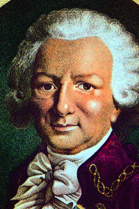
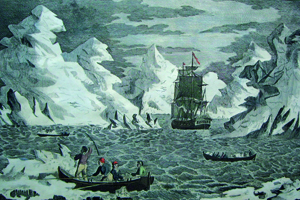
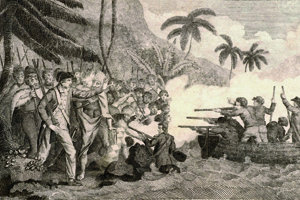
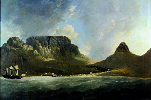
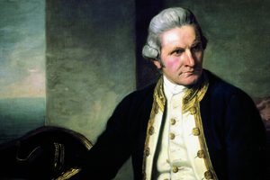
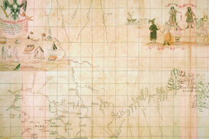

Lezione 10  Le Scoperte Geografiche
Le Scoperte Geografiche

-
165
450
-
160
210
-
450
695
-
250
70
-
415
490
-
150
420
-
110
690
-
440
835
-
330
255
PAESI BASSI
La civiltà dei Paesi Bassi conosce nel Seicento una vera e propria età dell’oro: l’attività dei geografi come quello raffigurato in questo capolavoro di Johannes Vermeer andava di pari passo con la scoperta e l’esplorazione di nuove terre, quali ad esempio la Nuova Zelanda e la Tasmania, che prende il nome proprio dal navigatore olandese Abel Tasman, scopritore anche dell’isola di Tonga.
CANADA
Nei suoi ottantadue anni di vita Louis Antoine de Bougainville, qui ritratto in un’incisione acquerellata del Settecento, lega il suo nome a molte terre e molti avvenimenti: luogotenente in Canada ma anche scopritore di isole polinesiane, circumnaviga il globo in compagnia di un disegnatore e di un astronomo, e contende le isole Malvine agli spagnoli prima che queste passino agli inglesi con il nome di Falklands. Combatte nella guerra d’Indipendenza americana; fedele a Luigi XVI, viene incarcerato durante il Terrore e colmato di onori da Napoleone. Appassionato botanico, scopre in Brasile il fiore che porta il suo nome, la Bougainvillea.
COOK
19 gennaio 1773: “Isole di ghiaccio”. Così appaiono a Cook e al suo equipaggio gli immensi iceberg che incontrano nei mari australi durante il secondo viaggio. Questa incisione del tardo Settecento restituisce il senso di spavento, meraviglia e terribile minaccia della navigazione a quelle latitudini.
HAWAII
Nel suo terzo viaggio James Cook viene accolto e celebrato dai nativi delle Hawaii, che lo identificano con una loro divinità. Commette però l’errore di tornare alle isole per una riparazione della nave in un momento sbagliato del loro calendario religioso: la violenta reazione degli indigeni, qui raffigurata in un’incisione del 1790, ne causa la morte. Le sue ossa vengono a lungo venerate come reliquie.
CAPO DI BUONA SPERANZA
Il pittore William Hodges accompagna Cook nel suo secondo viaggio, che documenta con molti dipinti e incisioni. Questa veduta del Capo di Buona speranza, dipinta nel 1772, è conservata al Museo Nazionale Marittimo di Greenwich.
INGHILTERRA
“Più lontano di dove chiunque sia mai stato finora, tanto oltre fin dove per un uomo è possibile spingersi”: questa la meta che il capitano James Cook si prefigge. In questo ritratto dipinto nel 1775 da Nathaniel Dance-Holland Cook, che è anche eccellente cartografo, è impegnato a studiare una carta geografica.- <

SIBERIA
Negli anni Venti del Settecento il danese Vitus Jonassen Bering intraprende un viaggio di esplorazione per conto dello zar Pietro il Grande, che lo porta ad esplorare la Siberia, di cui vediamo la mappa, e le regioni dell’estremo Nord, scoprendo e dando il nome allo stretto che separa la Siberia dall’Alaska: fino ad allora si pensava che America e Asia fossero collegate.
TASMANIA
1642-43: Abel Tasman, olandese, è il primo europeo a raggiungere le isole della Tasmania e della Nuova Zelanda.AMAZZONIA
La Condamine a metà del ‘700 mappa l’Amazzonia, è inviato in missione in Sud America dall’Accademia delle scienze francese per misurare la lunghezza di un grado di longitudine lungo l’equatore, per capire se la Terra fosse schiacciata ai poli o all’equatore.